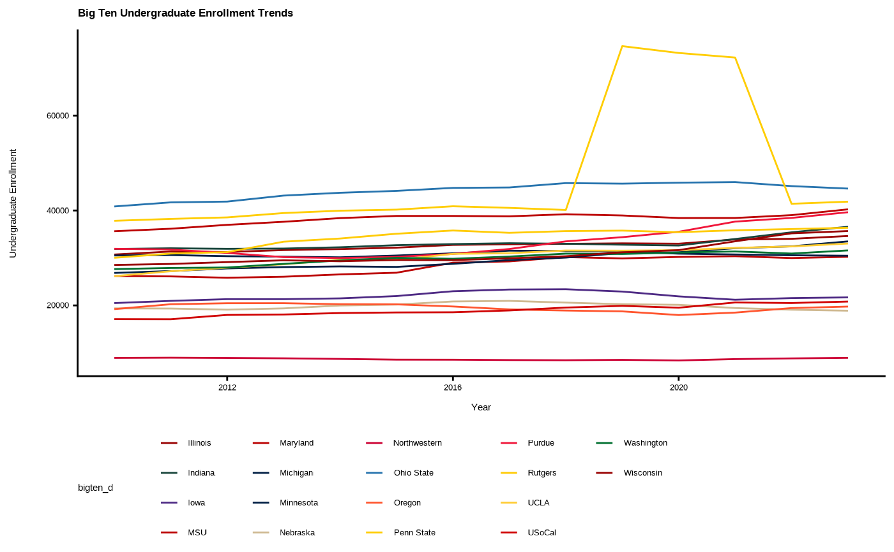

A comprehensive dataset containing institutional characteristics, enrollment data, financial information, and demographic composition for all Big Ten Conference member institutions from 1996 to 2023. This dataset tracks the evolution of these universities over nearly three decades, including data for institutions that joined the conference at different times.
Format
A data frame with 504 rows and 38 variables:
- name
Character. Institution name (e.g., "MSU", "Michigan", "Ohio State")
- Landgrant.tf
Logical. Whether the institution is a land-grant university
- Public.tf
Logical. Whether the institution is public (TRUE) or private (FALSE)
- AAU.tf
Logical. Whether the institution is a member of the Association of American Universities
- entry_term
Numeric. Year the data entry corresponds to (1996-2023)
- UGDS
Integer. Total undergraduate enrollment
- ADM_RATE
Numeric. Admission rate (proportion of applicants admitted)
- C150_4
Numeric. Completion rate for first-time, full-time students (150% of expected time)
- PCTPELL
Numeric. Percentage of undergraduates receiving Pell grants
- n.pell
Integer. Number of undergraduates receiving Pell grants
- TUITIONFEE_IN
Integer. In-state tuition and fees
- TUITIONFEE_OUT
Integer. Out-of-state tuition and fees
- TUITFTE
Integer. Net tuition revenue per full-time equivalent student
- BOOKSUPPLY
Integer. Average cost of books and supplies
- ROOMBOARD_ON
Integer. Average cost of room and board for on-campus students
- OTHEREXPENSE_ON
Integer. Other expenses for on-campus students
- OTHEREXPENSE_FAM
Integer. Other expenses for students living with family
- CoA.inState
Integer. Total cost of attendance for in-state students
- CoA.outState
Integer. Total cost of attendance for out-of-state students
- otherCosts.tot
Integer. Total other costs
- fte.tot
Integer. Total full-time equivalent tuition plus other costs
- fte.in.rat
Numeric. Ratio of full-time equivalent tuition plus other costs to in-state to total costs
- UGDS_WHITE
Numeric. Proportion of white undergraduate students
- UGDS_BLACK
Numeric. Proportion of Black undergraduate students
- UGDS_HISP
Numeric. Proportion of Hispanic undergraduate students
- UGDS_ASIAN
Numeric. Proportion of Asian undergraduate students
- UGDS_AIAN
Numeric. Proportion of American Indian/Alaska Native undergraduate students
- UGDS_NHPI
Numeric. Proportion of Native Hawaiian/Pacific Islander undergraduate students
- UGDS_2MOR
Numeric. Proportion of students of two or more races
- UGDS_NRA
Numeric. Proportion of non-resident alien undergraduate students
- UGDS_UNKN
Numeric. Proportion of students with unknown race/ethnicity
- UGDS_WHITENH
Numeric. Proportion of white non-Hispanic undergraduate students
- UGDS_BLACKNH
Numeric. Proportion of Black non-Hispanic undergraduate students
- UGDS_API
Numeric. Proportion of Asian/Pacific Islander undergraduate students
- UGDS_AIANOLD
Numeric. Proportion of American Indian/Alaska Native students (legacy coding)
- UGDS_HISPOLD
Numeric. Proportion of Hispanic students (legacy coding)
- UGDS_MEN
Numeric. Proportion of male undergraduate students
- UGDS_WOMEN
Numeric. Proportion of female undergraduate students
Source
Compiled from multiple institutional and federal data sources including the Integrated Postsecondary Education Data System (IPEDS) and institutional reports. Data spans 1996-2023. The dataset is a subset of the College Scorecard dataset (https://collegescorecard.ed.gov/data/), focusing on Big Ten institutions.
Details
The dataset includes all 18 current Big Ten Conference members:
Original members: Illinois, Indiana, Iowa, Michigan, Minnesota, Northwestern, Ohio State, Purdue, Wisconsin
1990 addition: MSU (Michigan State University)
1993 addition: Penn State
2011 addition: Nebraska
2014 additions: Maryland, Rutgers
2024 additions: UCLA, USoCal (USC), Oregon, Washington
Data availability varies by year and institution. Earlier years (especially 1996-2000) may have limited data for some variables. Financial data and demographic breakdowns became more standardized and complete in later years.
The dataset is particularly useful for:
Longitudinal analysis of Big Ten institutions
Comparative studies across public vs. private institutions
Analysis of conference expansion impacts
Demographic trend analysis in higher education
Cost and accessibility studies
See also
bigten_colors_primary, bigten_colors_secondary
for Big Ten institutional color palettes that correspond to the institutions
in this dataset.
Examples
# Load the dataset
data(BigTen)
# View structure
str(BigTen)
#> tibble [504 × 38] (S3: tbl_df/tbl/data.frame)
#> $ name : chr [1:504] "UCLA" "USoCal" "Illinois" "Northwestern" ...
#> $ Landgrant.tf : logi [1:504] FALSE FALSE TRUE FALSE FALSE FALSE ...
#> $ Public.tf : logi [1:504] TRUE FALSE TRUE FALSE TRUE TRUE ...
#> $ AAU.tf : logi [1:504] TRUE TRUE TRUE TRUE TRUE TRUE ...
#> $ entry_term : num [1:504] 1996 1996 1996 1996 1996 ...
#> $ UGDS : num [1:504] 23912 14586 26311 7645 25451 ...
#> $ ADM_RATE : num [1:504] NA NA NA NA NA NA NA NA NA NA ...
#> $ C150_4 : num [1:504] NA NA NA NA NA NA NA NA NA NA ...
#> $ PCTPELL : num [1:504] NA NA NA NA NA NA NA NA NA NA ...
#> $ n.pell : int [1:504] NA NA NA NA NA NA NA NA NA NA ...
#> $ TUITIONFEE_IN : int [1:504] NA NA NA NA NA NA NA NA NA NA ...
#> $ TUITIONFEE_OUT : int [1:504] NA NA NA NA NA NA NA NA NA NA ...
#> $ TUITFTE : int [1:504] NA NA NA NA NA NA NA NA NA NA ...
#> $ BOOKSUPPLY : int [1:504] NA NA NA NA NA NA NA NA NA NA ...
#> $ ROOMBOARD_ON : int [1:504] NA NA NA NA NA NA NA NA NA NA ...
#> $ OTHEREXPENSE_ON : int [1:504] NA NA NA NA NA NA NA NA NA NA ...
#> $ OTHEREXPENSE_FAM: int [1:504] NA NA NA NA NA NA NA NA NA NA ...
#> $ CoA.inState : int [1:504] 0 0 0 0 0 0 0 0 0 0 ...
#> $ CoA.outState : int [1:504] 0 0 0 0 0 0 0 0 0 0 ...
#> $ otherCosts.tot : int [1:504] 0 0 0 0 0 0 0 0 0 0 ...
#> $ fte.tot : int [1:504] 0 0 0 0 0 0 0 0 0 0 ...
#> $ fte.in.rat : num [1:504] NA NA NA NA NA NA NA NA NA NA ...
#> $ UGDS_WHITE : num [1:504] NA NA NA NA NA NA NA NA NA NA ...
#> $ UGDS_BLACK : num [1:504] NA NA NA NA NA NA NA NA NA NA ...
#> $ UGDS_HISP : num [1:504] NA NA NA NA NA NA NA NA NA NA ...
#> $ UGDS_ASIAN : num [1:504] NA NA NA NA NA NA NA NA NA NA ...
#> $ UGDS_AIAN : num [1:504] NA NA NA NA NA NA NA NA NA NA ...
#> $ UGDS_NHPI : num [1:504] NA NA NA NA NA NA NA NA NA NA ...
#> $ UGDS_2MOR : num [1:504] NA NA NA NA NA NA NA NA NA NA ...
#> $ UGDS_NRA : num [1:504] 0.0266 0.0967 0.0103 0.0294 0.023 0.0215 0.0319 0.0388 0.0236 0.0164 ...
#> $ UGDS_UNKN : num [1:504] 0.0269 0.0103 0.0108 0.0343 0.0095 0.0448 0.0219 0.0374 0.0045 0.0757 ...
#> $ UGDS_WHITENH : num [1:504] 0.331 0.445 0.723 0.671 0.877 ...
#> $ UGDS_BLACKNH : num [1:504] 0.0601 0.0628 0.0723 0.0574 0.0383 ...
#> $ UGDS_API : num [1:504] 0.377 0.2345 0.1279 0.1771 0.0306 ...
#> $ UGDS_AIANOLD : num [1:504] 0.0097 0.0062 0.0022 0.0018 0.0023 0.0035 0.0023 0.007 0.0055 0.0061 ...
#> $ UGDS_HISPOLD : num [1:504] 0.1691 0.1441 0.0536 0.0292 0.0189 ...
#> $ UGDS_MEN : num [1:504] 0.481 0.52 0.542 0.487 0.455 ...
#> $ UGDS_WOMEN : num [1:504] 0.519 0.48 0.458 0.513 0.545 ...
# Check institutions included
unique(BigTen$name)
#> [1] "UCLA" "USoCal" "Illinois" "Northwestern" "Indiana"
#> [6] "Iowa" "Maryland" "Michigan" "MSU" "Minnesota"
#> [11] "Nebraska" "Rutgers" "Ohio State" "Oregon" "Penn State"
#> [16] "Washington" "Wisconsin" "Purdue"
# Examine enrollment trends over time
if (require(ggplot2)) {
library(ggplot2)
BigTen_recent <- subset(BigTen, entry_term >= 2010 & !is.na(UGDS))
ggplot(BigTen_recent, aes(x = entry_term, y = UGDS, color = name)) +
geom_line() +
scale_color_bigten_d(palette = "primary") +
theme_MSU() +
labs(title = "Big Ten Undergraduate Enrollment Trends",
x = "Year", y = "Undergraduate Enrollment")
}
#> Loading required package: ggplot2

# Compare public vs private institutions
table(unique(BigTen[c("name", "Public.tf")])$Public.tf)
#>
#> FALSE TRUE
#> 2 16